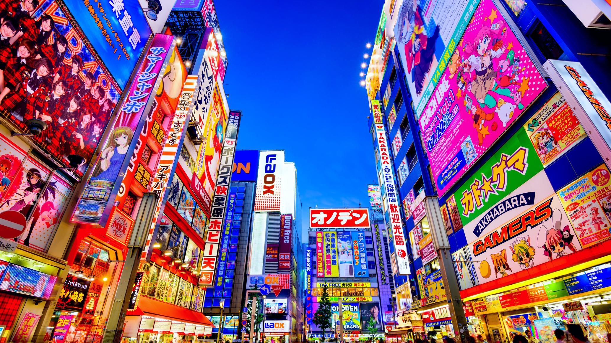
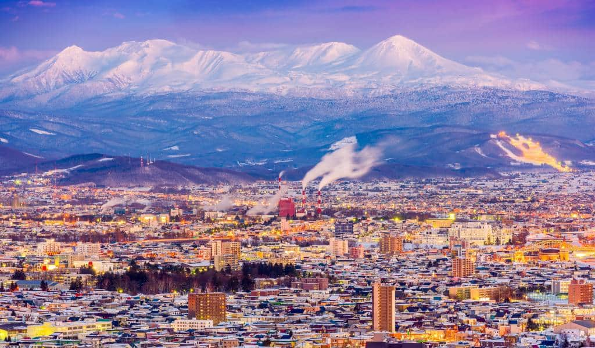

Guía de Rutas y Trenes Shinkansen
Explora las conexiones ferroviarias más importantes de Japón a través de tarjetas con detalles de velocidad, tiempos y destinos.

Tokio - Kioto (Shinkansen Tokaido)
Velocidad máxima: Hasta 285 km/h
Tiempo estimado: ~2h 15m
La columna vertebral del país. Conecta la capital moderna con el corazón histórico de Kioto, ofreciendo vistas privilegiadas del Monte Fuji.

Osaka - Nara (Línea Regional)
Tipo de servicio: Expreso regional / Cercanías
Tiempo estimado: ~40m
Trayecto rápido y frecuente para saltar del dinamismo comercial de Osaka a los templos milenarios y parques habitados por ciervos en Nara.

Ruta del Norte (Hokkaido)
Velocidad máxima: Hasta 260 km/h
Tiempo estimado: ~4h
Atraviesa el impresionante túnel submarino Seikan bajo el mar para conectar con los paisajes naturales y nevados del norte.